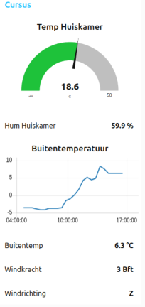
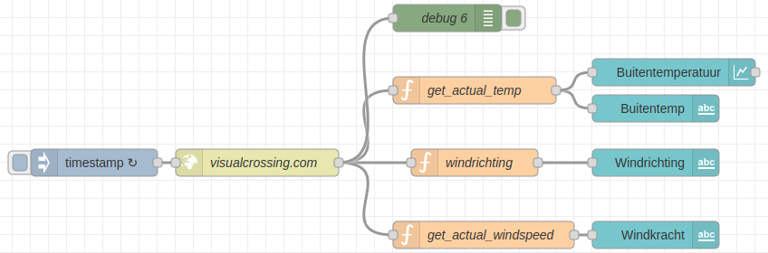
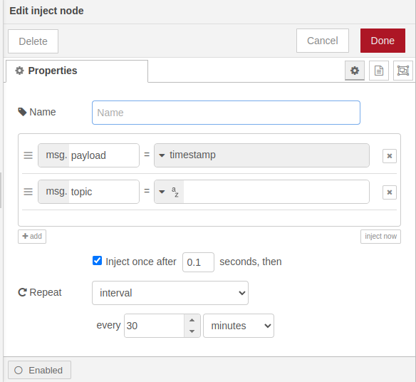
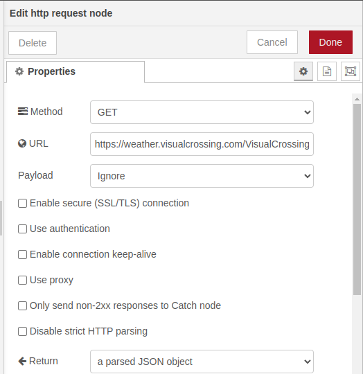
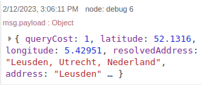
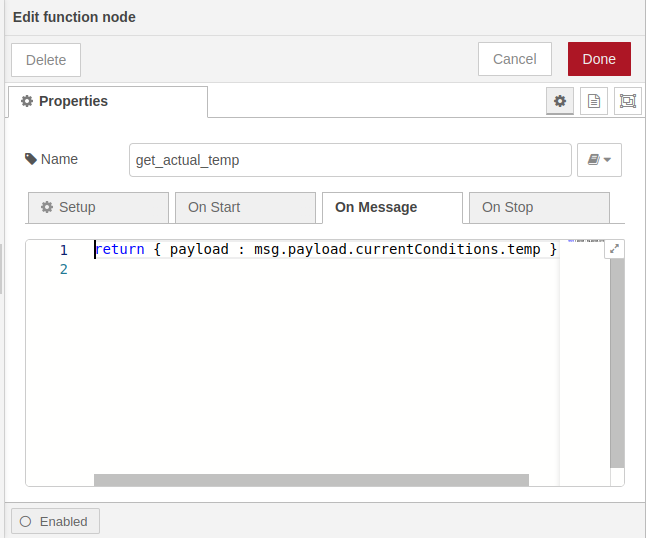
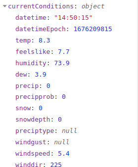
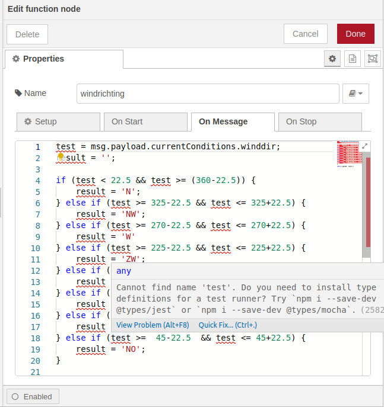

Node-RED dashboard programma maken
Deze module geeft je een set nodes (knooppunten) in Node-RED waarmee je snel een live data dashboard kunt maken.
Je gaat een dashboard maken dat de volgende dingen laat zien:
- Hoe warm het is en hoe vochtig de lucht in huis is.
- Hoe de temperatuur buiten verandert.
- Hoe hard de wind waait en vanuit welke richting.

Inhoud
Wat je nodig hebt
- Een Raspberry Pi 3B+ met het besturingssysteem Ubuntu Server 22.04.
- Docker, Portainer, Node-RED en MQTT broker zijn geinstalleerd.
- Een ESP8266 met een DHT22 die gegevens stuurt naar de MQTT broker.
- Een wifi netwerk waar de hierboven genoemde delen op zijn aangesloten.
Wat je gaat doen
Stap 1: De Node-RED Dashboard module downloaden.
Stap 2: Het dashboard samenstellen.
Stap 3: Weergegevens ophalen en op dashboard weergeven.
Stap 1 - De Node-RED Dashboard module downloaden
Node-RED heeft al veel verschillende soorten knoppen, maar soms wil je iets extra's. Dat kan door het toevoegen van nieuwe knoppen. Een populaire toevoeging is de dashboard module. Deze module bestaat uit verschillende knoppen die speciaal zijn gemaakt voor het maken van dashboards. Bijvoorbeeld, er is een knop voor het laten zien van een gegeven in een meter of gegevens in een grafiek. Ook is er een knop voor het laten zien van gegevens als tekst. De module moet je toevoegen, het wordt namelijk niet standaard meegeleverd:
| Stap | Actie |
|---|---|
| 1 | Klik op het menu in de rechter bovenhoek en ga naar "Manage Palette". |
| 2 | Zoek in de zoekbalk naar "node-red-dashboard" en klik op het resultaat. |
| 3 | Klik op de witte knop "Install" om de dashboard nodes te installeren. |
| 4 | Je krijgt een melding. Klik op de rode knop met "Install" om de dashboard nodes te installeren. |
| 5 | Na het installeren kun je de dashboard nodes vinden in het linkermenu onder de categorie "dashboard". |
Stap 2 - Het dashboard samenstellen
Als je het adres IP_adres_raspberry_pi:1880/ui intypt in je web browser, kan je gegevens zien van de "dashboard module". We zullen verwijzen naar de MQTT broker met het onderwerp (topic) "temperatuur2".  .
.
Volg deze stappen om het werk te doen:
| Stap | Actie |
|---|---|
| 1 | Sleep de node "mqtt in" uit de groep "network" naar je werkblad. |
| 2 | Sleep de node "gauge" uit de groep "dashboard" naar je werkblad en maak verbinding met "mqtt in". |
| 3 | Dubbelklik op "mqtt in" en typ het IP adres van je Raspberry Pi in het vak "Server". Bijvoorbeeld: 192.168.2.49. |
| 4 | Typ in het vak "Topic" het woord temperatuur2. |
| 5 | Typ in het vak "Name" de zin Temp huiskamer. |
| 6 | Sleep de node "mqtt in" uit de groep "network" naar je werkblad. |
| 7 | Sleep de node "text" uit de groep "dashboard" naar je werkblad en maak verbinding met "mqtt in". |
| 8 | Dubbelklik op "mqtt in" en typ het adres van je Raspberry Pi in het vak "Server". Bijvoorbeeld: 192.168.2.49. |
| 9 | Typ in het vak "Topic" het woord humidity2. |
| 10 | Typ in het vak "Name" de zin Hum huiskamer. |
| 11 | Dubbelklik op "Text" en typ in het vak "Value format" {{msg.payload}} %. |
| 12 | Kies bij "Layout" voor het vierde voorbeeld. |
| 13 | Klik op de knop "Deploy" om de code te maken. |
| 14 | Typ in de adresbalk van je browser IP_adres_raspberry_pi:1880/ui en druk op Enter. |
Stap 3 - Weergegevens ophalen en op dashboard weergeven
We gaan weergegevens over Leusden ophalen van een website die "Visual Crossing" heet. Hiervoor moeten we eerst een account maken op de website. Als we een account hebben, krijgen we een "API key". Dit is een soort code die we nodig hebben om de informatie op te halen. We hebben in onze les "Website bouwen met Node-RED" al geleerd hoe je met een API omgaat. We mogen de informatie gratis opvragen, maar we moeten er wel voor zorgen dat we niet te vaak op een dag informatie opvragen. Als we het opvragen van informatie onder de 1000 keer per dag houden, is het gratis. Ik vraag zelf de informatie elke 15 minuten op, dus ik vraag het in totaal 4 x 24 = 96 keer per dag op, dus veel minder dan het maximum.
Zorg dat je je persoonlijke "API key" klaar hebt liggen voordat je de steppen gaat uitvoeren.
| Stap | Actie |
|---|---|
| 1 | Sleep de nodes "timestamp", "http request", debug, 3x functie en uit de groep dashboard "chart" en 3x "text". Confiugreer de nodes volgens onderstaand schema. $\\$ |
| 2 | Dubbelkik op "timestamp" $\\$ |
| 3 | Klik op het keuzevakje once after. |
| 4 | Kies bij de Repeat groep voor: interval. |
| 5 | Type in het veld "every": 30. |
| 6 | Kies als eenheid: minutes. |
| 7 | Druk op de toets "Done". |
| 7 | Dubbelklik op "http request". $\\$ |
| 8 | Type in het veld "URL": https://weather.visualcrossing.com/VisualCrossingWebServices/rest/services/timeline/Leusden?unitGroup=metric&key=JOUW_API_KEY&contentType=json. |
| 9 | Kies in het keuze veld "Return" voor: a parsed JSON object. |
| 10 | Druk op de toets "Done". |
| 11 | Debug geef een JSON object zodra je op het meest linkse grijze vierkantje klikt van timestamp. Een groep is "currentConditions. Dit zijn de gegevens die we willen gebruiken op het dashboard. Je krijgt ze te zien als je in het venster geheel rechts kies voor de tab "Debug messages". $\\$ |
| 12 | Dubbelklik op de eerste "functie" en geef het de naam: get_actual_temp. $\\$ |
| 13 | Typ op de eerste regel: return { payload : "msg.payload.currentConditions.conditions };. "conditions" is de tekst die het type weer aangeeft. Bijvoorbeeld "overcast", betekent dat het bewolkt is. $\\$Een payload is een belangrijk onderdeel van computers en technologie. Het is een term die gebruikt wordt om iets te beschrijven dat wordt verstuurd via internet of een computer-netwerk. Denk bijvoorbeeld aan het versturen van een e-mail naar iemand. De boodschap die je verstuurt, bijvoorbeeld je tekst en eventuele afbeeldingen, is de payload. Het wordt verzonden via het internet naar de ontvanger, zoals jij wilt dat het wordt ontvangen.$\\$ |
| 14 | Druk op de toets "Done". |
| 15 | Dubbelklik op de tweede "functie" en geef het de naam: "windrichting". $\\$ |
| 16 | Kopieer de tekst uit "Javascript code windrichting" naar het code blok. |
| 17 | Druk op de toets "Done". |
| 18 | Dubbelklik op de derde "functie" en geef het de naam: "windsnelheid". |
| 19 | Kopieer de tekst uit Javascript code windsnelheid in Beaufort. Hiermee converteren we de windsnelheid (m/sec) naar Beaufort. De tabel vind je hier. |
Javascript code windrichting
let test = msg.payload.currentConditions.winddir;
let result = '';
if (test < 22.5 && test >= (360-22.5)) {
result = 'N';
} else if (test >= 325-22.5 && test <= 325+22.5) {
result = 'NW';
} else if (test >= 270-22.5 && test <= 270+22.5) {
result = 'W'
} else if (test >= 225-22.5 && test <= 225+22.5) {
result = 'ZW';
} else if (test >= 180-22.5 && test <= 180+22.5) {
result = 'Z';
} else if (test >= 135-22.5 && test <= 135+22.5) {
result = 'ZO';
} else if (test >= 90-22.5 && test <= 90+22.5) {
result = 'O';
} else if (test >= 45-22.5 && test <= 45+22.5) {
result = 'NO';
}
return { payload : result };Javascript code windsnelheid in Beaufort
let test = msg.payload.currentConditions.winddir;
let result = '';
if (test <= 1) {
result = '0';
} else if (test > 1 && test <= 5) {
result = '1';
} else if (test > 5 && test <= 11) {
result = '2'
} else if (test > 11 && test <= 19) {
result = '3';
} else if (test > 19 && test <= 28) {
result = '4';
} else if (test > 28 && test <= 38) {
result = '5';
} else if (test > 38 && test <= 49) {
result = '6';
} else if (test > 49 && test <= 61) {
result = '7';
} else if (test > 61 && test <= 74) {
result = '8';
} else if (test > 74 && test <= 88) {
result = '9';
} else if (test > 88 && test <= 102) {
result = '10';
} else if (test > 102 && test <= 117) {
result = '11';
} else if (test > 117 ) {
result = '12';
return { payload : result };